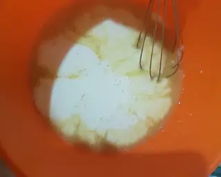
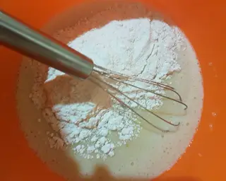
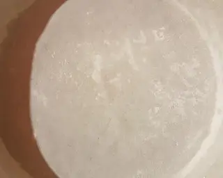
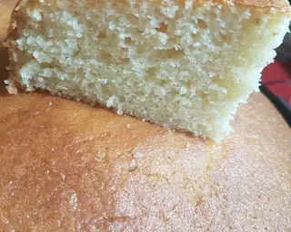

Veras como hacer paso a paso y de manera sencilla un bizcochuelo casero
| Ingrediente | Cantidad |
|---|---|
| Harina leudante | 2 tazas |
| Azúcar | 1 taza |
| Leche | 1 taza |
| Huevos | 2 |
| Esencia de vainilla | Un poco |
| Aceite | 150 cc |
Mezclar los huevos y la esencia de Vainilla
Colocar el aceite, azúcar, la leche y mezclar
Colocar las 2 tazas de harina y mezclar hasta que no queden grumos
Enmantecar y enharinar el molde y colocar la preparación
Llevar al horno 160° por 45 minutos o hasta pinchar y que salga seco! IMPORTANTE no abrir el horno
Sacar del horno, dejar enfriar, desmoldar y disfrutar
